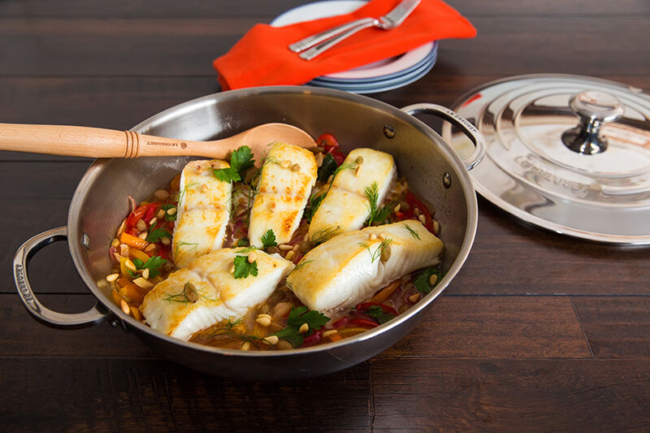

Braised Halibut Agrodolce

Give me an hour, I'll give you fish from the Gods
Braising is not only a cooking technique used to tenderize tough cuts of meat. Yes, fish too can be braised! Braising fish is a great way to cook your fish filets to get loads of flavour, all while maintaining a melt-in-your-mouth texture. Try this Braised Halibut Agrodolce for just that. Halibut is a great cut of fish to baise with; its mild flavour absorbs all the notes of the braising liquid during the cooking process. Although the star of this dish is without a doubt the halibut filets, the agrodolce is an excellent sauce to accompany the braised fish. Its sweet, yet tart flavour livens the halibut and brightens the entire dish. This Braised Halibut Agrodolce recipe takes just about an hour to make, and makes about 4-6 servings depending on the sizes of your filets. For smaller or larger servings, make sure to adjust the portions accordingly. Here are all the ingredients you need and steps to follow before tackling this recipe.
Ingredients
- 1 Cup flour
- 3 Tablespoons olive oil
- 6 Halibut fillets; 2 pounds
- Salt & black pepper
- 1 each: yellow and orange bell peppers; julienned
- 1 fennel bulb; julienned
- 1 Small red onion; julienned
- 3 cloves garlic; minced
- 1 cup dry white wine
- 1 cup champagne vinegar
- 1/2 cup sugar
- 1 bay leaf
- 1 cup golden raisins
- 1 cup parsley leaves
- 1 cup pine nuts; toasted
- Fennel fronds
Steps
- Heat a 4.7 L Stainless Steel Braiser over medium heat, adding the olive oil once hot. Pat the halibut dry with paper towels. Season with salt and pepper and sear on the top side without skin until golden brown. Remove to a plate.
- Saute the peppers, fennel, onions and garlic until the onions are soft and translucent, about 5 minutes. Add wine and vinegar, and reduce 3 to 5 minutes. Stir in the sugar until it is dissolved.
- Return the fish to the pan, browned side up. Add the bay leaf. If the liquid has cooked completely dry, add 1/2 cup water to the pan.
- Simmer, cover and reduce heat to low. Cook for 12 to 15 minutes or until fish is cooked all the way through. Serve halibut atop the vegetables, and garnish with raisins, parsley, pine nuts and fennel fronds.